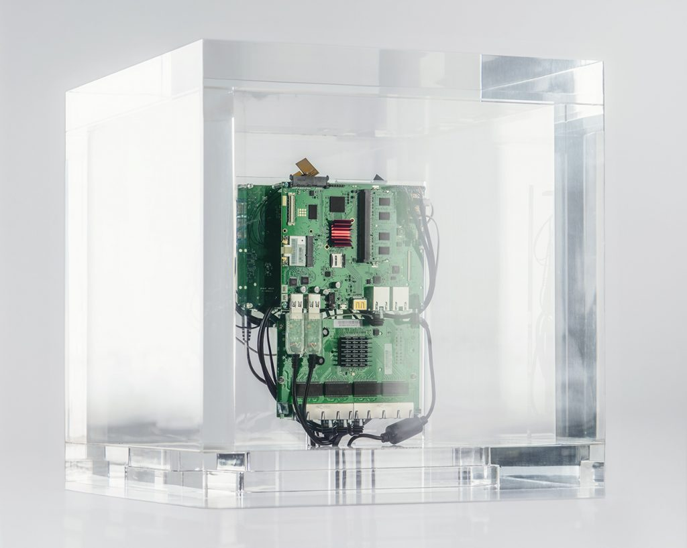

Plexiglas cube, computer components. 19 ⅝ × 19 ⅝ × 19 ⅝ in.
Autonomy Cube is a sculpture designed to be housed in art museums, galleries, and civic spaces. The sculpture is meant to be both "seen" and "used." This happens in several ways. Internet-connected computers housed within the work create an open Wi-Fi hotspot called "Autonomy Cube" wherever it is installed. Anyone can join this network and use it to connect.